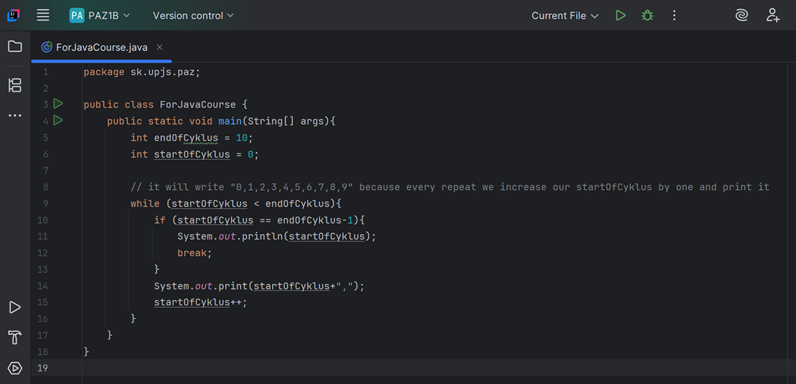
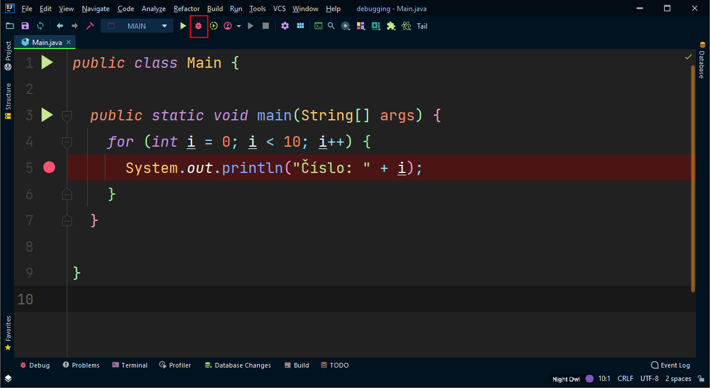

Lekcia 4: Cykly a referencie
Cykly nám umožňujú vykonávať ten istý blok kódu opakovane, kým je splnená určitá podmienka. To nám šetrí čas a riadky kódu.
Základné typy cyklov
V Jave najčastejšie používame tieto tri druhy:
| Cyklus | Kedy ho použiť? | Príklad |
|---|---|---|
| for | Keď presne vieme, koľkokrát chceme kód opakovať. | for (int i = 0; i == 5; i++) |
| while | Keď opakujeme kód, kým platí podmienka. | while (x > 0) |
| do-while | Keď chceme, aby sa kód vykonal aspoň raz. | do { ... } while (podmienka); |
Niekolko prikladov:

